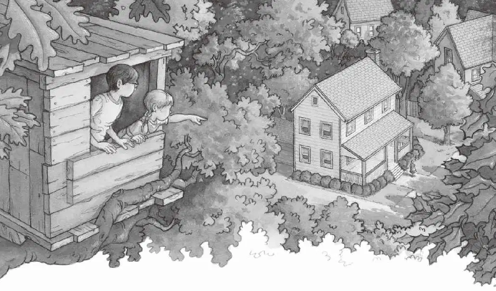
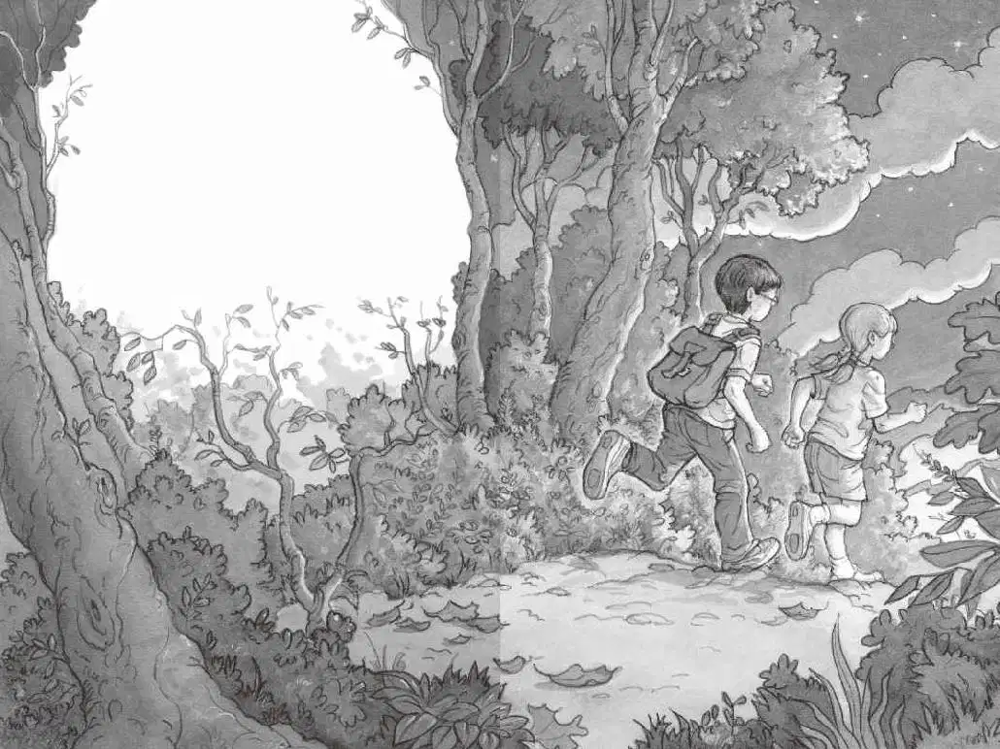

杰克听见一只鸟在唱歌。
他睁开眼睛，发现自己还指着那幅图片。

他朝树屋外望去。
外面的景色真的和书上的一模一样。
“我们回家了。”安妮小声说。
金色的夕阳照亮了树林。
太阳即将落山。
他们离开蛙溪之后，时间并没有流逝。
“杰克！安妮！”远处一个声音喊道。
“是妈妈。”安妮说。
杰克远远地就看见了妈妈。
妈妈正站在他们家门前，看上去那么小。
“安妮！杰克！”妈妈又喊了一声。
安妮把脑袋探出窗外，回应道：“来啦！”
杰克还是感到有点儿头晕。
他呆呆地望着安妮。
“刚才到底发生了什么事？”他问。
“乘着神奇树屋去旅行了。”安妮简单地回答。
“可是，现在的时间还跟我们离开时的一样。”杰克说。安妮耸了耸肩，表示自己也不知道怎么回事。
“它怎么会把我们带到那么遥远的地方？”杰克问，“而且时代还那么久远？”
“你指着书上的图片，说‘请带我们去那儿’，然后神奇树屋就把我们带过去了。”安妮说。
“可是怎么会这样呢？”杰克说，“这个神奇树屋到底是谁建的呢？这些书又是谁放在这儿的呢？”
“我猜是一个神奇的人吧。”安妮说。
“对了，你看，我差点儿忘了。”
杰克把手伸进口袋，掏出那枚金勋章。
“有人把它落在了那儿，落在了恐龙出没的地方。”
杰克说：“你看，上面有一个字母M。”
安妮的眼睛一下子睁圆了：“你说，M是不是代表神奇的人（magic person）？”
“我不知道，”杰克说，“我只知道有人在我们之前去过那个地方。”
“杰克！安妮！”妈妈又喊了起来。
“来啦！”安妮大声回答。
杰克把金勋章放回自己的口袋。接着他从背包里抽出那本恐龙书，跟其他书放在了一起。
然后，他和安妮最后环顾了一下树屋。
“再见了，树屋。”安妮轻声地说。
杰克把背包背在肩上。
安妮开始顺着绳梯往下爬。
杰克跟了上去。
不一会儿，他们就跳到地面上，迈步往树林外走去。
“没有人会相信我们的故事。”杰克说。
“那我们最好谁也别告诉。”安妮说。
“爸爸不会相信。”杰克说。
“他会说这是一场梦。”安妮说。
“妈妈不会相信。”杰克说。
“她会说这是在演戏。”安妮说。
“我的老师也不会相信。”杰克说。
“她会说你脑子坏掉了。”安妮说。
“那我们最好谁也别告诉。”杰克说。
“这话我刚刚已经说过了。”安妮说。
杰克叹了口气说：“我好像也开始不相信我自己了。”
他们离开树林，踏上了回家的那条路。
路上经过了一户又一户人家，杰克越来越觉得这趟恐龙谷之旅就像一场梦。
似乎只有现在的这个世界和这个时刻才是真实的。
杰克把手伸进口袋，紧紧握住那枚金勋章。
他抚摩着字母M的刻纹，手指感到微微的刺痛。
杰克笑了笑，他突然感到非常开心。
虽然他无法解释今天到底发生了什么，但他相信乘着神奇树屋去旅行这件事是真的。
绝对是真的。
“明天，”杰克轻声说，“我们还要去树林。”
“那还用说！”安妮笑道。
“我们还要爬到树屋上面去。”杰克说。
“那当然。”安妮说。
“然后看看接下来会发生什么。”杰克说。
“那是一定的！”
“来，让我们看看谁跑得快！”安妮说。
话音刚落，他们就拔腿朝家里跑去。
